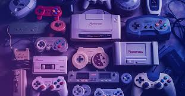
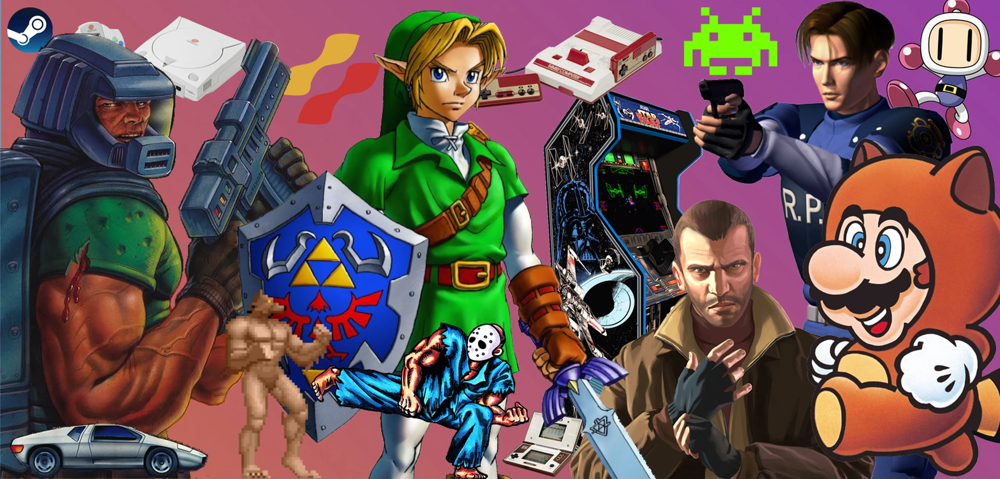

Un videojuego o juego de video es un software o juego electrónico en el que uno o más jugadores interactúan por medio de un controlador, con un dispositivo electrónico que muestra imágenes de video.1 Este dispositivo, conocido genéricamente como «plataforma», puede ser una computadora, una máquina de arcade, una consola de videojuegos o un dispositivo portátil, como por ejemplo un teléfono móvil, teléfono inteligente, tableta o una consola de videojuegos portátil. La industria de los videojuegos es un sector en constante crecimiento y se ha convertido en una forma de entretenimiento muy popular a nivel mundial.

Los jugadores interactúan con los videojuegos a través de dispositivos de entrada a los que se conoce como controladores o mandos. Mediante estos dispositivos, los jugadores controlan los movimientos y acciones de los personajes del juego y varía dependiendo de la plataforma. Por ejemplo, un controlador podría únicamente consistir de un botón y una palanca de mando o joystick, mientras otro podría presentar una docena de botones y una o más palancas, lo que llamamos mando. Los primeros juegos solían hacer uso de un teclado para llevar a cabo la interacción, o bien requerían que el usuario adquiriera un mando con un botón como mínimo.2 Muchos juegos de computadora modernos permiten o exigen que el usuario utilice un teclado y un ratón de forma simultánea.

Generalmente los videojuegos hacen uso de otros medios, además de la imagen, de proveer los reflejos e interacción al jugador. El audio es casi universal, usándose dispositivos de reproducción de sonido, tales como altavoces y auriculares. Otro tipo de realimentación se hace a través de periféricos hápticos que producen vibración o retroalimentación de fuerza.
Típicamente, los videojuegos recrean entornos y situaciones virtuales en los que el videojugador puede controlar
a uno o varios personajes (o cualquier otro elemento de dicho entorno), para conseguir uno o varios objetivos
dentro de unas reglas determinadas.
Dependiendo del videojuego, una partida puede disputarla una sola persona contra la máquina, dos o más personas
en la misma máquina, o bien múltiples jugadores a través de una red LAN o en línea vía Internet, compitiendo
colaborativamente contra la máquina o entre sí.
Existen videojuegos de muchos tipos. Algunos de los géneros más representativos son los videojuegos de acción,
rol, estrategia, simulación, deportes, aventura o mundo abierto.